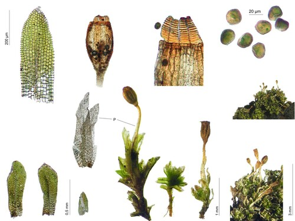

Rhachitheciaceae
(Rhachithecium Moss Family - informal)
Rhachitheciaceae is a small family of mosses typically found forming low tufts or mats on bark or rock in tropical to temperate regions. They are characterized by leaves that are often strongly crisped or contorted when dry, erect capsules borne on short setae, and a peristome that is single, rudimentary, or absent.
Overview
The Rhachitheciaceae family comprises a handful of genera and species of relatively small mosses distributed widely across tropical, subtropical, and temperate areas, though individual species are often rare or scattered. These mosses typically grow as epiphytes on tree bark or epiliths on rock surfaces, forming low, often dense tufts or mats.
A key characteristic useful for field recognition is the behavior of the leaves upon drying – they typically become strongly crisped, curled, or contorted, contrasting with their more spread-out appearance when moist. The sporophytes are generally small, with erect capsules elevated on short stalks (setae). The peristome structure is notably variable within the family, ranging from a single set of 16 teeth to being highly reduced or completely absent (gymnostomous).
The phylogenetic placement of Rhachitheciaceae remains uncertain. Morphological similarities, such as the crisped leaves and sometimes papillose cells, have led to suggestions of relationships with families like Ptychomitriaceae or groups within the Orthotrichales or Grimmiales. Molecular data has also yielded ambiguous or varying results, sometimes placing it near Orthotrichales or as a more isolated lineage. Its unique combination of features makes it an interesting group for studying moss evolution and classification.
Quick Facts
- Scientific Name: Rhachitheciaceae
- Common Name: (Rhachithecium Moss Family - informal)
- Number of Genera: ~6-7 (e.g., Rhachithecium, Hypnodontopsis, Tisserantiella)
- Number of Species: Approximately 10-15
- Distribution: Widespread in tropical, subtropical, and temperate regions; often epiphytic or epilithic.
- Evolutionary Group: Bryophytes - Bryopsida (True Mosses) - Order uncertain (Orthotrichales / Ptychomitriales / Grimmiales)
Key Characteristics
Rhachitheciaceae mosses are defined by their growth habit, leaf posture, and variable sporophyte features.
Gametophyte Form and Habit
The gametophyte generation forms small tufts or mats:
- Habit: Plants small, forming low, often dense tufts or mats.
- Size: Stems typically short, erect or ascending from somewhat creeping bases.
- Color: Green, yellowish-green, brownish, or dark green.
- Stems: Simple or sparsely branched. Central strand often present.
- Substrate: Typically epiphytic (bark, twigs) or epilithic (rock).
Leaves (Phyllids)
Leaves are characteristically crisped when dry:
- Arrangement & Shape: Crowded, erect-spreading to spreading when moist, characteristically strongly crisped, curled, or contorted when dry. Shape variable, often lanceolate, ovate-lanceolate, or lingulate (tongue-shaped), often concave. Apex usually acute or obtuse.
- Costa (Midrib): Usually strong, single, ending just below the apex (subpercurrent) or reaching it (percurrent), occasionally shortly excurrent.
- Margins: Often plane or recurved below, typically entire or finely serrulate or crenulate (scalloped) near the apex due to projecting cell walls.
- Cells: Upper laminal cells typically small, quadrate, rounded-quadrate, or shortly rectangular, usually thick-walled, and often densely papillose (with one or several small bumps per cell). Basal cells may be longer and smoother. Alar cells generally not differentiated.
Reproductive Structures
- Sexual Condition: Variable, autoicous or dioicous.
- Archegonia & Antheridia: Terminal on main stems or branches (acrocarpous or cladocarpous). Perichaetial leaves often larger than vegetative leaves, sometimes sheathing the base of the seta.
Sporophyte
Sporophytes are typically small with reduced features:
- Seta: Usually short (often 1-5 mm), straight, smooth.
- Capsule: Erect and symmetric, typically small, shape varies from ovate or elliptical to cylindrical, smooth-walled.
- Operculum: Usually conical or conic-rostrate (with a short to moderate beak).
- Peristome: Highly variable within the family. May be:
- Single: Consisting of 16 lanceolate, often papillose teeth (sometimes irregular, fragile, or perforated).
- Rudimentary: Reduced to a low membrane or very short, irregular segments.
- Absent: Gymnostomous (capsule mouth bare after operculum falls).
- Calyptra: Typically mitrate (conical, unlobed) or sometimes campanulate (bell-shaped), often covering much of the capsule, surface smooth, papillose, or sometimes hairy.
Spores
Spores typically spherical, variable in size, often papillose.
Chemical Characteristics
No specific chemical characteristics are widely noted beyond those typical for Bryopsida mosses.
Field Identification
Identifying Rhachitheciaceae often involves recognizing the crisped dry leaves on small tufts growing on bark or rock, combined with the short seta and erect capsule.
Primary Identification Features (Hand Lens Level)
- Crisped Dry Leaves: The most noticeable feature – leaves become strongly curled, twisted, or contorted when the plant dries out.
- Habitat: Typically found on tree bark (epiphytic) or rock (epilithic).
- Growth Form: Small plants forming low, often dense tufts or mats.
- Short Seta & Erect Capsule: Sporophytes (if present) have capsules held upright on short stalks, emergent from the leaves.
- Reduced/Absent Peristome: While hard to see definitively without magnification, the lack of prominent, well-developed peristome teeth can be suggestive.
Secondary Identification Features
- Leaf Shape: Often lanceolate or lingulate.
- Papillose Cells: Leaves may appear dull due to papillose cells (requires good lens).
- Calyptra Shape: Mitrate or campanulate calyptra covering the capsule.
Seasonal Identification Tips
- Year-Round: Gametophytes are perennial. The crisped appearance of dry plants is a constant feature.
- Spring / Summer (Varies): Best time to find mature sporophytes.
Common Confusion Points
Distinguishing Rhachitheciaceae from other mosses with crisped leaves:
- Ptychomitriaceae (Ptychomitrium): Similar crisped leaves, often on rock or sometimes bark. Usually larger plants, capsules often ribbed, peristome teeth are long, slender, and undivided.
- Orthotrichaceae (Ulota, some Orthotrichum): Often epiphytic with crisped leaves (Ulota). Distinguished by well-developed double peristomes (though sometimes hidden or fragile), capsules often ribbed and sometimes immersed/emergent.
- Rhabdoweisiaceae / Dicranoweisiaceae (e.g., Dicranoweisia cirrata): Often have crisped leaves but typically grow on rock (D. cirrata also on bark/wood), possess different (Dicranoid) peristome structures.
- Pottiaceae (e.g., Tortella, Weissia): Some species have crisped leaves. Differ in cell papillosity patterns, peristome structures (if present), and often leaf base characteristics.
Field Guide Quick Reference
Look For:
- Habitat: Bark or rock
- Small tufts or mats
- Leaves strongly crisped/contorted when dry
- Capsules erect on short setae
- Peristome single, rudimentary, or absent
Key Distinctions:
- vs. Ptychomitriaceae: Peristome type (reduced vs. long/undivided), capsule ribbing.
- vs. Orthotrichaceae: Peristome type (reduced/absent vs. double), capsule ribbing/position.
- vs. Rhabdoweisiaceae: Peristome type (variable vs. Dicranoid).
Notable Examples
The family includes several small genera, often with restricted distributions.

Rhachithecium perpusillum
(Tiny Rhachithecium Moss)
A very small moss found widely scattered in temperate regions, typically growing on bark at the base of trees or on shaded rock. Forms low, dark green tufts. Leaves are lingulate and strongly crisped when dry. Capsules are erect, ovate on very short setae, and gymnostomous (lacking a peristome).

Hypnodontopsis apiculata
(Pointed Hypnodon Moss)
Found in parts of Asia, Africa, and the Americas, often on rock or soil over rock. Plants form dense cushions. Leaves are lanceolate, crisped when dry, with papillose cells. Capsules are erect on short setae and possess a single peristome of 16 fragile, papillose teeth.
Phylogeny and Classification
Rhachitheciaceae is classified within the class Bryopsida. Its phylogenetic position among moss orders remains uncertain and has been debated based on varying interpretations of morphological features and molecular data.
Potential relationships have been suggested with several different orders:
- Orthotrichales: Similarities in sporophyte features (erect capsule, short seta, sometimes mitrate calyptra) and epiphytic habit have suggested links to this order, particularly families like Orthotrichaceae.
- Ptychomitriales: The crisped leaves resemble those of Ptychomitriaceae, leading some to place it within or near this order.
- Grimmiales: Some features, like the single peristome (when present) and often thick-walled cells, have prompted comparisons with Grimmiales.
Molecular studies have often placed Rhachitheciaceae near the Orthotrichales, but sometimes as an independent lineage or associated with other groups. The variability in peristome structure within the family further complicates its placement. Currently, it is often treated as a distinct family whose precise ordinal affiliation requires further investigation.
Position in Plant Phylogeny
- Kingdom: Plantae
- Clade: Embryophyta (Land Plants)
- Division: Bryophyta (Mosses)
- Class: Bryopsida
- Order: Orthotrichales / Ptychomitriales / Grimmiales (Placement Uncertain)
- Family: Rhachitheciaceae
Evolutionary Significance
Rhachitheciaceae, though small, is relevant to understanding moss evolution:
- Convergent Evolution: The crisped leaf habit has evolved independently in several moss lineages (e.g., Ptychomitriaceae, Orthotrichaceae, Pottiaceae), and Rhachitheciaceae provides another example, possibly linked to desiccation tolerance.
- Peristome Reduction/Loss: Exhibits a range of peristome states from single to rudimentary to absent, illustrating evolutionary trends in sporophyte simplification.
- Phylogenetic Uncertainty: Its ambiguous placement highlights challenges in resolving relationships among major moss lineages based on current data.
- Niche Adaptation: Represents adaptation to specific epiphytic and epilithic niches, often in relatively warm climates.